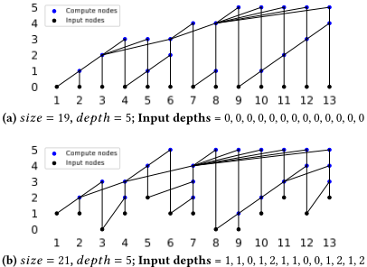
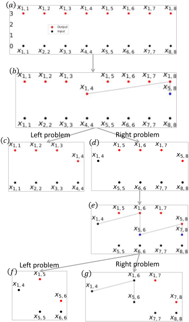
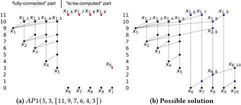
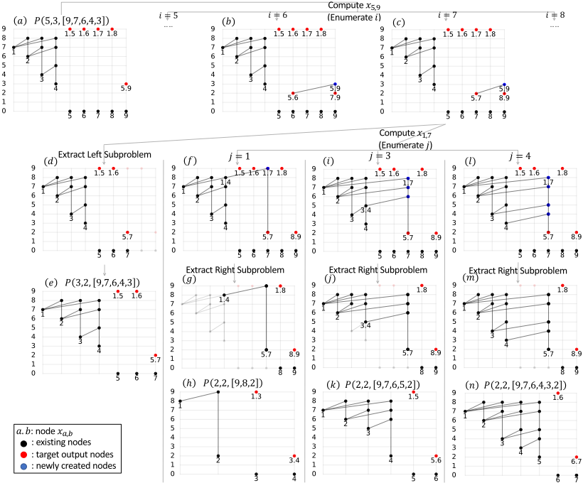
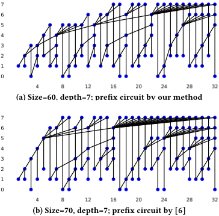
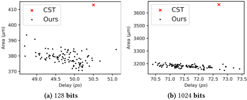

尺寸优化的深度约束大规模并行前缀电路
该论文针对现有加法器设计方法主要面向 32/64/128 位等常规位宽、难以高效生成 1024/2048 位大位宽高质量加法器，且实际中加法器常嵌入 MAC 等电路导致输入到达时间非均匀的问题，提出了一种新的并行前缀电路生成算法。方法上，论文构造了 divide-and-conquer-friendly 的辅助问题形式化 AP1/AP2，通过枚举两个目标输出的计算方式将问题递归分解为子问题，用动态规划生成并维护最有用的加法器结构，并以定理保证枚举剪枝不损失质量，可自然支持逐位非均匀输入深度约束。实验显示该算法在所有测试的位宽/深度约束组合下均得到最小规模前缀电路，覆盖了先前 state-of-the-art 无法处理的用例；与商业综合工具相比，64~1024 位加法器平均 delay/area/power 分别降低 2.8%/8.3%/10.3%。对团队而言，其深度约束加非均匀到达时间的结构生成思路，对存储/互连 IP 数据通路的时序收敛与 datapath 优化有方法借鉴价值。
现有加法器设计算法大多面向常规位宽：state-of-the-art 的 search-based 方法 [6,7] 只能生成 128 位以内加法器，refinement-based 方法（Liu et al. [2]）虽可扩展到大位宽但无法有效最小化面积；同时实际设计中加法器常作为 MAC 等复杂电路的一部分，引入非均匀输入到达时间，使现有算法在质量与效率上进一步下降。论文要解决的问题是：在给定深度约束（含逐位非均匀输入到达时间）下，高效生成大规模（1024/2048 位）、尺寸最小的并行前缀电路/加法器。
将加法器设计形式化为并行前缀电路问题（P1：给定 N 与深度 D 最小化 size；P2：进一步给定逐位输入深度 Q）。核心是提出 divide-and-conquer-friendly 的辅助问题 AP1/AP2：前 m 位为 fully-connected 部分、后 n 位为待计算部分，使递归分解出的子问题具有统一输入/输出模式，从而可用动态规划高效求解。算法枚举两个输出节点的计算方式（变量 i 决定 x_{m+1,m+n} 的左右划分，变量 j 决定 x_{1,i} 的计算链），再分解为左右子问题；Theorem 1 证明对 j 的剪枝在 depth 与 size 上不损失质量。复杂度为 O(N^4 log^2 N) 时间 / O(N^3) 空间，在时序收敛常用的最小深度 D=ceil(log2 N) 场景降为 O(N^3 log^2 N) / O(N^2)。加法器以交替 OAI/AOI 门的标准方式实现，并经商业综合工具做一轮 size-only（结构保持）综合加两轮增量综合后与直接综合 y=a+b 的结果对比。
在所有测试的位宽/深度约束组合下均生成最小规模前缀电路，包括先前工作 [12] 与 [6,7] 返回 N/A（无法生成）的多个用例；与 [12] 的可用结果对比未出现实验性次优
与商业综合工具（CST）相比，64/128/256/512/1024 位加法器的平均 delay、area、power 分别降低 2.8%、8.3%、10.3%（NanGate 15nm Open Cell Library，typical NLDM，每位宽探索 100 个加法器取 best-delay 结果）
非均匀输入深度用例（32 位、rand()%3、seed=0）：本文前缀电路规模为 60，state-of-the-art [6] 为 70
理论复杂度：P1 情形 O(N^4 log^2 N) 时间 / O(N^3) 空间；最小深度场景降为 O(N^3 log^2 N) / O(N^2)
生成的加法器功能正确性由商业工具验证
相对已有工作：(1) state-of-the-art [6,7] 为 search-based 且只能到 128 位，Liu et al. [2] 为 refinement-based 可扩展但无法有效最小化面积，[12] 结果完备但覆盖的约束组合有限，本文在其可用用例上不劣且能处理更多此前无法生成的约束；(2) 提出新的 divide-and-conquer-friendly 辅助问题形式化（AP1/AP2），使动态规划能高效处理大位宽与逐位非均匀输入到达时间，并以定理保证剪枝无损；(3) 同时兼顾质量（最小 size）、运行效率（多项式时间）与灵活性（非均匀 arrival time），可生成文献中少有研究的大规模（数千位）加法器。
相关度级别：medium
命中能力域：2.2 RTL 设计与实现 | 2.3 时序与物理实现
理由：团队核心是 LPDDR/HBM4/UCIe 等存储与互连 IP，数据通路中确有加法/计数类单元（地址生成、刷新调度、CRC、FIFO/credit 指针运算等），但论文的主要动机与验证场景是 1024/2048 位大位宽加法器（RSA 等密码学应用），与团队的代表工程场景不直接重合。不过其'深度约束下最小化 size'的问题定义与团队 2.2/2.3 的时序收敛工作方式相通，非均匀输入到达时间建模对应真实 STA arrival time 驱动的 datapath 优化，且'算法生成结构优于商业综合工具'的结论提示在关键 datapath 上结构级优化仍有 PPA 空间，故判为 medium 而非 high。
建议动作：作为方法参考存档
Shiju Lin
sjlin@cse.cuhk.edu.hk 香港中文大学
华为设计自动化实验室，香港
二进制加法器是集成电路（IC）设计中的关键构建模块。除了广泛使用的 32/64/128 位加法器之外，大型（1024/2048 位）加法器在密码学等应用中也十分重要。然而，目前大多数加法器设计方法都针对规则的位宽，无法高效地生成性能良好的大型加法器。在实际应用中，加法器通常被集成到乘累加器（multiplier-accumulator, MAC）等电路中，从而产生复杂的非均匀输入到达时间。为应对这些挑战，我们提出了一种新算法，可针对非均匀输入到达时间高效地生成高质量加法器。该算法基于一种新颖的、便于分治处理的问题形式化描述，能够通过动态规划有效地生成并维护最有用的加法器结构。实验结果表明，该算法在质量和运行时间两方面均优于当前最先进的方法。与商用综合工具生成的加法器相比，我们算法生成的加法器在延迟、面积和功耗方面分别降低了 2.8%、8.3% 和 10.3%。
芯片功能通常可分为以下几类：数据通路运算单元、存储元件、控制结构以及专用单元（I/O、电源分配、时钟生成与分配、模拟/射频）[10]。常见的数据通路运算单元包括加法器、减法器、乘法器、比较器、移位器、计数器等。在这些数据通路运算单元中，加法器是最基础且使用最广泛的。加法器不仅用于执行加法运算，还是减法器（𝑎 - 𝑏 通过 𝑎 +(- 𝑏 ) 计算）、比较器（通过比较 𝑎 +(- 𝑏 ) 与 0 来比较 𝑎 和 𝑏）以及乘法器（通常设计为压缩树后接一个加法器）的重要组成部分。加法器在数据通路运算单元中的广泛应用使得加法器设计成为一个重要且富有价值的研究问题。
除了现代计算平台中广泛使用的 32 和 64 等常见位宽之外，超大位宽的加法器在某些应用中也很常见，例如密码学中的 RSA 芯片（1024 位 RSA 芯片设计参见 [11]）。然而，现有的大多数加法器设计算法要么无法生成大位宽的加法器，要么无法设计出满足
在满足以下条件的情况下，允许免费制作本作品部分或全部内容的数字或硬拷贝以供个人或课堂使用：拷贝的制作或分发不得以营利或获取商业利益为目的，且拷贝首页须保留本声明及完整的引用信息。本作品中第三方组件的版权必须得到尊重。对于所有其他用途，请联系所有者/作者。
ACM ISBN 979-8-4007-0601-1/24/06.
© 2024 版权归所有者/作者所有。
https://doi.org/10.1145/3649329.3655935
sheng.weihua@huawei.com Bentian Jiang jiangbentian@huawei.com 华为设计自动化实验室，香港
香港中文大学
fyyoung@cse.cuhk.edu.hk

所需的性能、功耗和面积（PPA）要求。例如，最先进的加法器设计算法 [6, 7] 是基于搜索的，只能生成最多 128 位的加法器。Liu 等人 [2] 的算法是基于细化的，虽然能很好地扩展到大位宽，但无法有效最小化面积。设计大型高质量加法器需要新的算法。
为了克服这些挑战，我们提出了一种在非均匀输入到达时间下设计高质量并行前缀电路的新方法。并行前缀电路是加法器设计问题的一种典型形式化描述，已被广泛采用 [1-3, 59, 12]。我们的主要贡献总结如下。
然而，大位宽并不是现代加法器设计中的唯一挑战。在实际应用中，加法器通常是乘累加器（MAC）等复杂电路的一部分，这需要对这两个单元进行协同优化，并为加法器引入非均匀的输入到达时间。例如，图 1a 和图 1b 分别展示了考虑与不考虑非均匀输入到达时间的两种用于加法器设计的前缀电路。非均匀输入到达时间的存在大大增加了加法器设计的复杂性，导致现有加法器算法的质量和效率均有所下降。
我们通过将我们的前缀电路与最先进研究工作所生成的前缀电路进行比较，以及将我们的前缀加法器与商业综合工具所生成的前缀加法器进行比较，来评估我们的算法。实验结果表明，我们的前缀电路在每个测试用例中都达到了最小尺寸，我们的前缀加法器在延迟、面积和功耗方面分别优于商业工具 2.8%、8.3% 和 10.3%。
A parallel prefix circuit takes 𝑛 inputs 𝑥 𝑖 , and computes 𝑛 outputs 𝑦 𝑖 = 𝑥 1 ◦ 𝑥 2 ◦ ... ◦ 𝑥 𝑖 , 𝑖 = 1 , ..., 𝑛 in parallel, where ◦ is a binary associative operator. In the context of adders, 𝑥 𝑖 is ( 𝑔, 𝑝 ) 𝑦 𝑖 is ( 𝑔, 𝑝 ) 1 ,𝑖 . We use 𝑥 𝑖,𝑖 = 𝑥 𝑖 to represent the inputs and represent the node computing 𝑥 𝑖 ◦ ... ◦ 𝑥 𝑗 . We use 𝑥 𝑖,𝑗 = 𝑥 𝑘 + 1 , 𝑗 to denote that 𝑥 𝑖,𝑗 is computed from its left fanin 𝑥 𝑖,𝑘 right fanin 𝑥 𝑘 + 1 , 𝑗 . 𝑑𝑒𝑝𝑡ℎ ( 𝑥 𝑖,𝑗 ) denotes the depth of node 𝑥 𝑖,𝑗 depth of an input node is 0 if not specified, and the depth of a non-input node 𝑥 𝑖,𝑗 with 𝑥 𝑖,𝑗 = 𝑥 𝑖,𝑘 ◦ 𝑥 𝑘 + 1 , 𝑗 is recursively defined as max { 𝑑𝑒𝑝𝑡ℎ ( 𝑥 𝑖,𝑘 ) , 𝑑𝑒𝑝𝑡ℎ ( 𝑥 𝑘 + 1 , 𝑗 )} + 1. The 𝑑𝑒𝑝𝑡ℎ and 𝑠𝑖𝑧𝑒 prefix circuit are the maximum depth of its nodes and the number of nodes in it (excluding input nodes). The problems of prefix circuit design can be formally defined as:
Problem 1. 𝑃 1 ( 𝑁, 𝐷 ) : Given two integers 𝑁 and 𝐷 , construct an 𝑁 -bit prefix circuit of depth 𝐷 with minimized size.
≤
𝑁
Problem 2. 𝑃 2 ( 𝑁, 𝐷,𝑄 ) : Given integers 𝑁 , 𝐷 and 𝑄 𝑖 ( 1 ≤ 𝑖 where 𝑑𝑒𝑝𝑡ℎ ( 𝑥 𝑖 ) = 𝑄 𝑖 ( 𝑥 𝑖 is the input node at bit 𝑖 ), construct an 𝑁 -input prefix circuit of depth 𝐷 with minimized size.

Problem 2 is more general and practical than Problem 1, because adders are usually used together with other components, and Problem 2 can dynamically generate a better structure according to the input arrival times. We will first present our solution for Problem 1, followed by a natural generalization to Problem 2.
本小节介绍一种辅助问题形式化定义 𝐴𝑃 1，它 (i) 具有适合分治的结构，从而可导出高效的动态规划解法，并且 (ii) 能够帮助求解问题 1，因为 𝑃 1 是 𝐴𝑃 1 的特例。
问题 𝐴𝑃 1 ( 𝑛, 𝑑, [ 𝑝 0 , ..., 𝑝 𝑚 ])：给定一个具有以下性质的电路 𝐺，求需要添加的最少节点数，以便在深度 𝑑 处计算 𝑥 𝑚 + 1 ,𝑚 + 𝑛，并对每个 𝑖 ∈ [ 𝑚 + 1 , 𝑚 + 𝑛 - 1 ] 在深度 𝑝 0 处计算 𝑥 1 ,𝑖。
根据性质 3，我们称前 𝑚 个位是“全连接”的，因为对于任意满足 1 ≤ 𝑖 < 𝑗 ≤ 𝑚 的 𝑖 和 𝑗，𝑥 𝑖,𝑗 都存在。这一“全连接”部分承载着丰富的信息，对“待计算”部分（即最后 𝑛 个位）十分重要。变量 𝑚 未被显式地作为参数包含在问题 𝐴𝑃 1 中，因为它可以从 [ 𝑝 0 , ..., 𝑝 𝑚 ] 中元素的个数推断出来。𝑑𝑒𝑝𝑡ℎ ( 𝑥 𝑖,𝑗 ) = 𝑑𝑒𝑝𝑡ℎ ( 𝑥 𝑖 ) + 1 (1 ≤ 𝑖 < 𝑗 ≤ 𝑚 ) 也可以从性质 3 推断得出。
通过求解 𝐴𝑃 1 ( 𝑁, 𝐷, [ 𝐷 ]) 即可获得 𝑃 1 ( 𝑁, 𝐷 ) 的解。
我们以图 3a 中的 𝐴𝑃 1 ( 5 , 3 , [ 11 , 9 , 7 , 6 , 4 , 3 ]) 为例进行说明。前 𝑚 = 5 个输入的深度分别为 9 , 7 , 6 , 4 , 3，而最后 𝑛 = 5 个输入的深度均为 0。该电路还满足：对任意 1 ≤ 𝑎 < 𝑏 ≤ 5，均有 𝑥 𝑎,𝑏 = 𝑥 𝑎 ◦ 𝑥 𝑎 + 1 ,𝑏。𝐴𝑃 1 ( 5 , 3 , [ 11 , 9 , 7 , 6 , 4 , 3 ]) 即为需要添加的新节点的最小数量，以便在深度 3 处计算 𝑥 6 , 10，并在深度 11 处计算 𝑥 1 , 6、𝑥 1 , 7、𝑥 1 , 8 和 𝑥 1 , 9。这些目标输出在图 3a 中以红色标出。𝐴𝑃 1 ( 5 , 3 , [ 11 , 9 , 7 , 6 , 4 , 3 ]) 的答案为 9，图 3b 展示了一种添加 9 个节点的可行解。

To solve Problem 𝐴𝑃 1, we design an algorithm that first enumerates the computations of two output nodes and then divides the remaining problem into two subproblems. The enumeration is necessary for the divide and conquer and important for the final quality. We will illustrate our algorithm with an example in this subsection and present more technical details in the following subsections.
First, we consider how to generate 𝑥 5 , 9 at depth 3. The computation of 𝑥 5 , 9 can be described by an integer variable 𝑖 ∈ [ 5 , 8 ] , which gives 𝑥 5 , 9 = 𝑥 5 ,𝑖 ◦ 𝑥 𝑖 + 1 , 9. Two examples with 𝑖 = 6 and 𝑖 = 7 are shown in Figure 4 (b) and Figure 4 (c) respectively. This step completes target output 𝑥 5 , 9, but introduces two additional target outputs, 𝑥 5 ,𝑖 and 𝑥 𝑖 + 1 , 9.
The example is 𝐴𝑃 1 ( 5 , 3 , [ 9 , 7 , 6 , 4 , 3 ]) in Figure 4 (a), whose fullyconnected and to-be-computed parts are bits 1 to 4 and bits 5 to 9 respectively. The target outputs we want to generate are 𝑥 1 , 5, 𝑥 1 , 6, 𝑥 1 , 7, 𝑥 1 , 8 and 𝑥 5 , 9, which are marked in red and placed at the corresponding maximum allowed depths.
Second, we consider how to derive the left subproblem. Take 𝑖 = 7 in Figure 4 (c) as an example. We highlight the nodes that form the left subproblem in Figure 4 (d) and show the formal left subproblem in Figure 4 (e). It has the same fully-connected part as the original problem, and takes bits 5 to 7 as the to-be-computed part. The depth constraint of output node 𝑥 5 , 7 is 2, because it is a fanin of 𝑥 5 , 9 whose depth constraint is 3. The other two output nodes, 𝑥 1 , 5 and 𝑥 1 , 6, are directly inherited from the original problem and thus have an unchanged depth constraint of 9.
Lastly, we consider how to derive the right subproblem given 𝑖 and 𝑗 . For the examples in subfigures (f), (i) and (l), the relevant nodes for the right subproblems are highlighted in subfigures (g), (j) and (m) respectively. In Figure 4 (g), the right subproblem takes 𝑥 1 , 4 and 𝑥 5 , 7 as its fully-connected part, and bits 8 and 9 as the to-becomputed part. Nodes 𝑥 1 , 4, 𝑥 5 , 7, 𝑥 8 and 𝑥 9 in the original problem will become 𝑥 1, 𝑥 2, 𝑥 3 and 𝑥 4 in the right subproblem respectively, as shown in Figure 4 (h).
Third, we consider how to compute 𝑥 1 ,𝑖 at depth 9. We use an integer variable 𝑗 ∈ { 1 , 3 , 4 } to describe the computation. The case of 𝑗 = 2 is not considered because its resulting prefix circuits will be worse than those generated by setting 𝑗 ∈ { 1 , 3 , 4 } . In Figure 4 (c), the three ways of computing 𝑥 1 , 7 with 𝑗 equal to 1, 3 and 4 are shown in subfigures (f), (i) and (l) of Figure 4 respectively. The case 𝑗 = 1 gives 𝑥 1 , 7 = 𝑥 1 , 4 ◦ 𝑥 5 , 7, while 𝑗 = 3 gives 𝑥 1 , 7 = 𝑥 1 ◦( 𝑥 2 ◦( 𝑥 3 , 4 ◦ 𝑥 5 , 7 )) .

根据定理 1，未被考虑的情形（即 𝑗 不满足 𝑗 = 𝑚 且 𝑝 𝑗 + 1 < 𝑝 𝑗 - 1 的情形）在规模和深度两方面均不优于由被考虑情形所生成的结果。由于篇幅所限，此处不给出定理 1 的证明。
定理 1. 给定问题 𝐴𝑃 1 ( 𝑛, 𝑑, [ 𝑝 0 , ..., 𝑝 𝑚 ]) ，令 𝑆 = { 𝑚 } ∪ 𝑗 ∈ [ 1 , 𝑚 - 1 ] : 𝑝 𝑗 + 1 < 𝑝 𝑗 - 1 ，且 𝑇 = { 1 , ..., 𝑚 } - 𝑆 。对于任意整数 𝑢 ∈ 𝑇 ，令 𝑣 为 𝑆 中满足 𝑣 > 𝑢 的最小整数。使用 𝑗 = 𝑣 所生成的最终前缀电路，在深度和规模方面优于或不劣于使用 𝑗 = 𝑢 所生成的电路。
根据 𝐴𝑃 1 的定义，对于问题 𝐴𝑃 1 ( 𝑛, 𝑑, [ 𝑝 0 , ..., 𝑝 𝑚 ]) ，目标是在深度 𝑝 0 处为每个 𝑡 ∈ [ 𝑚 + 1 , 𝑚 + 𝑛 - 1 ] 计算 𝑥 1 ,𝑡 ，并在深度 𝑑 处计算 𝑥 𝑚 + 1 ,𝑚 + 𝑛 。对 𝑖 的枚举在深度 𝑑 处计算一个目标输出 𝑥 𝑚 + 1 ,𝑚 + 𝑛 ，并在深度 𝑑 - 1 处引入另外两个目标输出 𝑥 𝑚 + 1 ,𝑖 和 𝑥 𝑖 + 1 ,𝑚 + 𝑛 。对 𝑗 的枚举计算 𝑥 1 ,𝑖 。枚举步骤之后，目标输出变为 𝑥 𝑚 + 1 ,𝑖 、 𝑥 𝑖 + 1 ,𝑚 + 𝑛 以及每个 𝑡 ∈ [ 𝑚 + 1 , 𝑖 - 1 ] ∪ [ 𝑖 + 1 , 𝑚 + 𝑛 - 1 ] 对应的 𝑥 1 ,𝑡 ，这些将由子问题处理。左子问题计算 𝑥 𝑚 + 1 ,𝑖 以及 𝑡 ∈ [ 𝑚 + 1 , 𝑖 - 1 ] 对应的 𝑥 1 ,𝑡 ，而右子问题计算 𝑥 𝑖 + 1 ,𝑚 + 𝑛 以及 𝑡 ∈ [ 𝑖 +
Enumerating 𝑖 . Variable 𝑖 determines how 𝑥 𝑚 + 1 ,𝑚 + 𝑛 is computed: 𝑥 𝑚 + 1 ,𝑚 + 𝑛 = 𝑥 𝑚 + 1 ,𝑖 ◦ 𝑥 𝑖 + 1 ,𝑚 + 𝑛 . The construction of 𝑥 𝑚 + 1 ,𝑖 and 𝑥 𝑖 + 1 ,𝑚 + 𝑛 , which are the two fanins of 𝑥 𝑚 + 1 ,𝑚 + 𝑛 , will be done by the left and right subproblems respectively. Our algorithm enumerates 𝑖 from 𝑚 + 1 to 𝑚 + 𝑛 - 1, covering all cases of computing 𝑥 𝑚 + 1 ,𝑚 + 𝑛 . Enumerating 𝑗 . Variable 𝑗 ∈ [ 1 , 𝑚 ] describes how 𝑥 1 ,𝑖 is computed: 𝑥 1 ,𝑖 = 𝑥 1 ◦ ( 𝑥 2 ◦ ( ...𝑥 𝑗 - 1 ◦ ( 𝑥 𝑗,𝑚 ◦ 𝑥 𝑚 + 1 ,𝑖 ))) . This leads to the construction of 𝑥 𝑗,𝑖 = 𝑥 𝑗,𝑚 ◦ 𝑥 𝑚 + 1 ,𝑖 , and 𝑥 𝑘,𝑖 = 𝑥 𝑘 ◦ 𝑥 𝑘 + 1 ,𝑖 for every 𝑘 ∈ [ 1 , 𝑗 - 1 ] . We first compute 𝑥 𝑗,𝑖 and then 𝑥 𝑗 - 1 ,𝑖 , 𝑥 𝑗 - 2 ,𝑖 , ..., 𝑥 1 ,𝑖 in order. In Figure 4 (f), 𝑗 equals 1 and 𝑥 1 , 7 = 𝑥 1 , 4 ◦ 𝑥 5 , 7 is computed. In Figure 4 (i), 𝑗 equals 3 and we computes 𝑥 3 , 7, 𝑥 2 , 7 and 𝑥 1 , 7. In Figure 4 (l), 𝑗 equals 4 and 𝑥 4 , 7, 𝑥 3 , 7, 𝑥 2 , 7 and 𝑥 1 , 7 are computed in order. This computing scheme ensures that a fully-connected subcircuit can be formed as the fully-connected part of the right subproblem.
However, we need to verify that this fully-connected subcircuit has depth-decreasing inputs (property 2 of 𝐴𝑃 1) in order to use it for the right subproblem. The necessary condition for this is for 𝑗 to satisfy 𝑗 = 𝑚 or 𝑝 𝑗 + 1 < 𝑝 𝑗 - 1 (analysis omitted due to page limit). Fortunately, we are able to show that the restriction on 𝑗 does not affect the quality of the algorithm, because the final prefix circuits of
| Bitwidth.Depth | 32.5 | 32.6 7 | 64.6 N/A | 64. | 64.7 | 128.8 | 128.7 | 128.8 | 256.9 | 256.8 | 256.9 | 256.10 11 N/A | 512 11.9 | 512 11.10 | 512 11.12 | 1024.10 | 1024.11 | 1024.12 | 1024.13 | Average.Time (s) |
|---|---|---|---|---|---|---|---|---|---|---|---|---|---|---|---|---|---|---|---|---|
| [12] | N/A | 56 | 55 | N/A | 118 | N/A | N/A | 245 | N/A | N/A | 499 | N/A | N/A N/A | 1010 | N/A | N/A | ||||
| [6, 7] | 74 | 56 | 55 | 167 | 126 | 118 | 364 | 276 | 250 | N/A | N/A | N/A | N/A | N/A | >100 | |||||
| Ours | 74 | 56 | 55 | 167 | 125 | 118 | 364 | 272 | 245 | 773 | 575 504 | 499 | 1614 | 1190 1033 | 1010 | 3327 | 2437 | 2105 | 2035 | <1 |
| Bitwidth.Depth | 32.5 | 32.6 7 | 64.6 N/A | 64. | 64.7 | 128.8 | 128.7 | 128.8 | 256.9 | 256.8 | 256.9 | 256.10 11 N/A | 512 11.9 | 512 11.10 | 512 11.12 | 1024.10 | 1024.11 | 1024.12 | 1024.13 | Average.Time (s) |
1 , 𝑚 + 𝑛 - 1 ] . According to the target outputs of the left subproblem, its to-be-computed part is the ( 𝑚 + 1 ) -th to the 𝑖 -th bits of the original problem. Its fully-connected part is the same as that of the original problem, which provides information of the first 𝑚 bits. Precisely, the left subproblem is 𝐴𝑃 1 ( 𝑖 - 𝑚,𝑑 - 1 , [ 𝑝 0 , ..., 𝑝 𝑚 ]) . 𝐴𝑃 1 ( 3 , 2 , [ 9 , 7 , 6 , 4 , 3 ]) in Figure 4 (e) is the left subproblem for 𝑖 = 7.
右子问题更为复杂。根据上文所述的问题划分方式，右子问题的待计算部分是原问题的第 ( 𝑖 + 1 ) 位至第 ( 𝑚 + 𝑛 ) 位。由于我们要对每个 𝑡 ∈ [ 𝑖 + 1 , 𝑚 + 𝑛 - 1 ] 计算 𝑥 1 ,𝑡 ，原问题前 𝑖 位的信息十分重要。我们使用原问题的前 𝑚 位（该部分是全连接的）以及 𝑥 𝑚 + 1 ,𝑖 来构成右子问题的全连接部分。我们必须确保这一部分是全连接的，这正是 3.2 节中所述问题 𝑃 的第三条性质。我们为右子问题构建这一全连接部分的方式与 𝑗 有关。我们使用 𝑥 1、 𝑥 2、...、 𝑥 𝑗 - 1、 𝑥 𝑗,𝑚 和 𝑥 𝑚 + 1 ,𝑖 作为输入节点。我们在上一小节中已经证明，这些输入节点的输入深度是递减的。接下来，我们验证这些输入是全连接的。输入节点总共有 𝑗 + 1 个，其中前 𝑗 个节点已经满足全连接，因为它们来自原问题的全连接部分。剩下还需证明，最后一个节点 𝑥 𝑚 + 1 ,𝑖 与前 𝑗 个节点中的每一个都存在连接。这正是对 𝑗 进行枚举所要完成的工作。首先计算 𝑥 𝑗,𝑖 = 𝑥 𝑗,𝑚 ◦ 𝑥 𝑚 + 1 ,𝑖 ，随后计算 𝑥 𝑘,𝑖 = 𝑥 𝑘 ◦ 𝑥 𝑘 + 1 ,𝑖 ，其中 𝑘 从 𝑗 - 1 取到 1。准确地说，右子问题即为 𝐴𝑃 1 ( 𝑚 + 𝑛 - 𝑖, 𝑑 - 1 , [ 𝑝 0 , ..., 𝑝 𝑗 - 1 , 𝑑𝑒𝑝𝑡ℎ ( 𝑥 𝑗,𝑚 ) , 𝑑 - 1 ]) 。
我们分析 𝐷 ≤ 2 ⌈ log 2 𝑁 ⌉ 情况下的算法，因为当 𝐷 > 2 ⌈ log 2 𝑁 ⌉ 时，𝑃 1 ( 𝑁, 𝐷 ) 的最优解可以从 [12] 中获得。
定理 2. 对于 𝐷 ≤ 2 ⌈ log 2 𝑁 ⌉ 的 𝑃 1 ( 𝑁, 𝐷 )，我们算法的时间复杂度和空间复杂度分别为 𝑂 ( 𝑁 4 log 2 𝑁 ) 和 𝑂 ( 𝑁 3 ) 。
由于篇幅限制，此处不提供证明。分析的关键在于注意到：鉴于 𝑝 0 > 𝑝 1 > ... > 𝑝 𝑚 > = 𝑑（𝐴𝑃 1 的性质 2），𝐴𝑃 1 ( 𝑛, 𝑑, [ 𝑝 0 , ..., 𝑝 𝑚 ]) 中的 [ 𝑝 0 , ..., 𝑝 𝑚 ] 仅有 𝑂 ( 2 𝐷 ) 种组合（当 𝐷 = 2 ⌈ log 2 𝑁 ⌉ 时，该值等于 𝑂 ( 𝑁 2 ) ）。在实际应用中，为了满足时序收敛（timing closure），通常要求深度取最小可能值（即 𝐷 = ⌈ log 2 𝑁 ⌉ ）。在此情形下，时间复杂度和空间复杂度分别降低为 𝑂 ( 𝑁 3 log 2 𝑁 ) 和 𝑂 ( 𝑁 2 ) 。
本小节讨论 2.2 节中定义的问题 2。与问题 1 相比，问题 2 中额外给出了表示输入深度的 𝑁 个整数 𝑄 𝑖 。此前，我们定义了 𝐴𝑃 1 来辅助求解 𝑃 1 。类似地，我们如下定义 𝐴𝑃 2 来辅助求解 𝑃 2 。
问题 𝐴𝑃 2 ( 𝑙, 𝑟, 𝑑, [ 𝑝 0 , ..., 𝑝 𝑚 ]) ：给定一个具有以下性质的电路 𝐺 ，求所需添加的最少节点数，使得能够在深度 𝑑 处计算 𝑥 𝑚 + 1 ,𝑚 + 𝑟 - 𝑙 + 1 ，并对每个 𝑖 ∈ [ 𝑚 + 1 , 𝑚 + 𝑟 - 𝑙 ] 在深度 𝑝 0 处计算 𝑥 1 ,𝑖 。
𝑃 2 ( 𝑁, 𝐷,𝑄 ) 可以通过计算 𝐴𝑃 2 ( 1 , 𝑁, 𝐷, [ 𝐷 ]) 来求解。问题 𝐴𝑃 2 ( 𝑙, 𝑟, 𝑑, [ 𝑝 0 , ..., 𝑝 𝑚 ]) 用 𝑙 和 𝑟 记录其待计算部分在原始 𝑃 2 中的位范围（即待计算部分对应原始 𝑃 2 的第 𝑙 位到第 𝑟 位）。由此即可得到它们的输入深度，即 𝑄 𝑙 到 𝑄 𝑟 。例如，假设我们正在求解 𝑃 2 ( 𝑁 = 12 , 𝐷 = 9 , 𝑄 = [ 3 , 2 , 1 , 2 , 0 , 1 , 1 , 0 , 0 , 1 , 1 , 2 ]) ，而 𝐴𝑃 2 ( 𝑙 = 7 , 𝑟 = 11 , 3 , [ 9 , 7 , 6 , 4 , 3 ]) 是需要计算的众多 𝐴𝑃 2 实例之一。在此例中，𝑙 = 7 和 𝑟 = 11 表明 𝐴𝑃 2 的第 5 位到第 9 位（待计算部分）是我们正在求解的原始问题 2 的第 7 位到第 11 位。因此，𝑥 5 , 𝑥 6 , 𝑥 7 , 𝑥 8 , 𝑥 9 的深度为 𝑄 7 , 𝑄 8 , 𝑄 9 , 𝑄 10 , 𝑄 11 = 1 , 0 , 0 , 1 , 1 。
𝐴𝑃 2 ( 𝑙, 𝑟, 𝑑, [ 𝑝 0 , ..., 𝑝 𝑚 ]) 可以采用与计算 𝐴𝑃 1 相同的算法来计算，只需同时考虑位范围 𝑙 和 𝑟 。确切地说，𝐴𝑃 2 ( 𝑙, 𝑟, 𝑑, [ 𝑝 0 , ..., 𝑝 𝑚 ]) 的左子问题和右子问题分别为 𝐴𝑃 2 ( 𝑙, 𝑖 - 𝑚 + 𝑙 - 1 , 𝑑 - 1 , [ 𝑝 0 , ..., 𝑝 𝑚 ]) 和 𝐴𝑃 2 ( 𝑖 - 𝑚 + 𝑙, 𝑟, 𝑑 - 1 , [ 𝑝 0 , ..., 𝑝 𝑗 - 1 , 𝑑𝑒𝑝𝑡ℎ ( 𝑥 𝑗,𝑚 ) , 𝑑 ]) 。
实验在一台配备 32GB 内存和 2.6GHz CPU 的 Linux 机器上进行。我们的加法器经商用工具验证，在功能上是正确的。
表1展示了在不同位宽和深度要求下，我们的算法与先前最先进工作 [12] [6, 7] 之间的并行前缀电路尺寸比较。[12] 的结果取自其论文，是完整的。由于 [6] 是 [7] 的初步版本，我们合并两者的结果并取其中较优者¹，在表1中以一行展示。表1中的 'N/A' 条目表示该算法无法在该约束下生成前缀电路。值得注意的是，我们的算法能够在所有情况下生成最小尺寸的结果，其中包括许多先前工作失败的情况。[12] 的可用结果（即非 'N/A' 条目）据称是最优的，而在与它的比较中，我们的工作在实验上未表现出任何次优性。
由于可能的输入深度种类繁多，难以对非均匀输入深度进行全面的比较。我们选择在图5中展示由我们的方法与 [6] 生成的前缀电路。输入深度是在 C++ 中按顺序对第 1-32 位使用 'rand()%3'（随机种子 = 0）随机得到的。我们的方法与 [6] 的前缀电路尺寸分别为 60 和 70。除了数字之外，我们还可以在图5中直观地看出我们的方法为何更优：关注第 23-24 位，它们在深度 0 处很早就到达。我们的方法利用了这一点，让它们立即在深度 1 处执行一些计算，而工作 [6] 则没有利用这一点，让它们等到深度 3 和 4 才进行首次计算。这表明我们的算法对输入深度具有更好的感知能力。
1 [6] 和 [7] 的结果分别通过运行所提供的源代码和取自其论文获得。

为了证明我们的方法在实际应用中的有效性，我们进一步将我们方法生成的加法器与商用综合工具（CST）生成的加法器进行比较。我们采用标准方式，使用交替的 OAI/AOI 门 [10] 来实现我们的加法器架构，并使用 CST 对其进行一次仅优化尺寸（保持结构不变）的综合迭代，随后再进行两次增量综合迭代。作为参考的 CST 加法器则是在相同流程中对 𝑦 = 𝑎 + 𝑏 进行综合得到的。综合采用 NanGate 15nm Open Cell Library [4]（typical，NLDM），目标延迟设置为 0。
表 2 展示了我们的加法器与 CST 加法器的延迟、面积和功耗结果。对于每种位宽，我们探索了由我们方法生成的 100 个加法器，并在表 2 中给出延迟最优加法器的结果。我们的方法能够有效地将 64 / 128 / 256 / 512 / 1024 位加法器的平均延迟、面积和功耗分别降低 2.8%、8.3% 和 10.3%。我们进一步在图 6 中展示了由我们方法生成的全部 100 个加法器的面积-延迟结果。结果清楚地表明，我们的方法在面积上一致且显著地优于 CST，并且在大多数情况下延迟也更优。
本文提出了一种新颖的、便于分治的问题形式化方法，用于设计并行前缀电路，随后给出了一种求解该问题的高效动态规划方法。该方法
Imp：由 ( 𝐶𝑆𝑇 - 𝑂𝑢𝑟𝑠 )/ 𝐶𝑆𝑇 计算得到的改进量
| Bitwidth.Bitwidth | Delay ( 𝑝𝑠 ).CST | Delay ( 𝑝𝑠 ).Ours | Delay ( 𝑝𝑠 ).Imp | Area ( 𝜇𝑚 ).CST | Area ( 𝜇𝑚 ).Ours | Area ( 𝜇𝑚 ).Imp | Power ( 𝑚𝑊 ).CST | Power ( 𝑚𝑊 ).Ours | Power ( 𝑚𝑊 ).Imp |
|---|---|---|---|---|---|---|---|---|---|
| 64 | 41.4 | 40.6 | 1.8% | 197.1 | 190.9 | 3.1% | 129.1 | 122.3 | 5.3% |
| 128 | 50.5 | 48.7 | 3.6% | 412.9 | 386.3 | 6.4% | 265.9 | 235.5 | 11.4% |
| 256 | 56.7 | 55 | 3.0% | 851.8 | 795.7 | 6.6% | 536.7 | 494.3 | 7.9% |
| 512 | 64.7 | 63.1 | 2.5% | 1799.3 | 1575.4 | 12.4% | 1098.7 | 939 | 14.5% |
| 1024 | 72.7 | 70.4 | 3.2% | 3665.4 | 3194.4 | 12.9% | 2191.8 | 1918.6 | 12.5% |
| Average | 2.8% | 8.3% | 10.3% |
| Bitwidth.Bitwidth | Delay ( 𝑝𝑠 ).CST | Delay ( 𝑝𝑠 ).Ours | Delay ( 𝑝𝑠 ).Imp | Area ( 𝜇𝑚 ).CST | Area ( 𝜇𝑚 ).Ours | Area ( 𝜇𝑚 ).Imp | Power ( 𝑚𝑊 ).CST | Power ( 𝑚𝑊 ).Ours | Power ( 𝑚𝑊 ).Imp |

速度快（多项式运行时间）、灵活（能够考虑非均匀输入深度），且质量高（优于最先进的学术与商业工具）。值得注意的是，本工作能够生成高性能的大规模（数千位）加法器，这类加法器在文献中鲜有研究，但在密码学中的 RSA 芯片等领域有着重要应用。